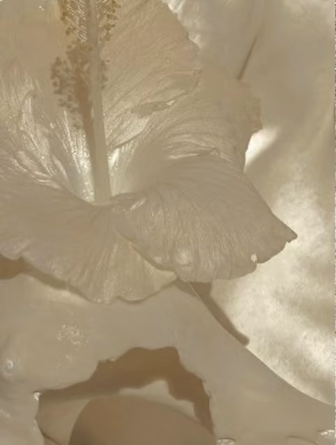
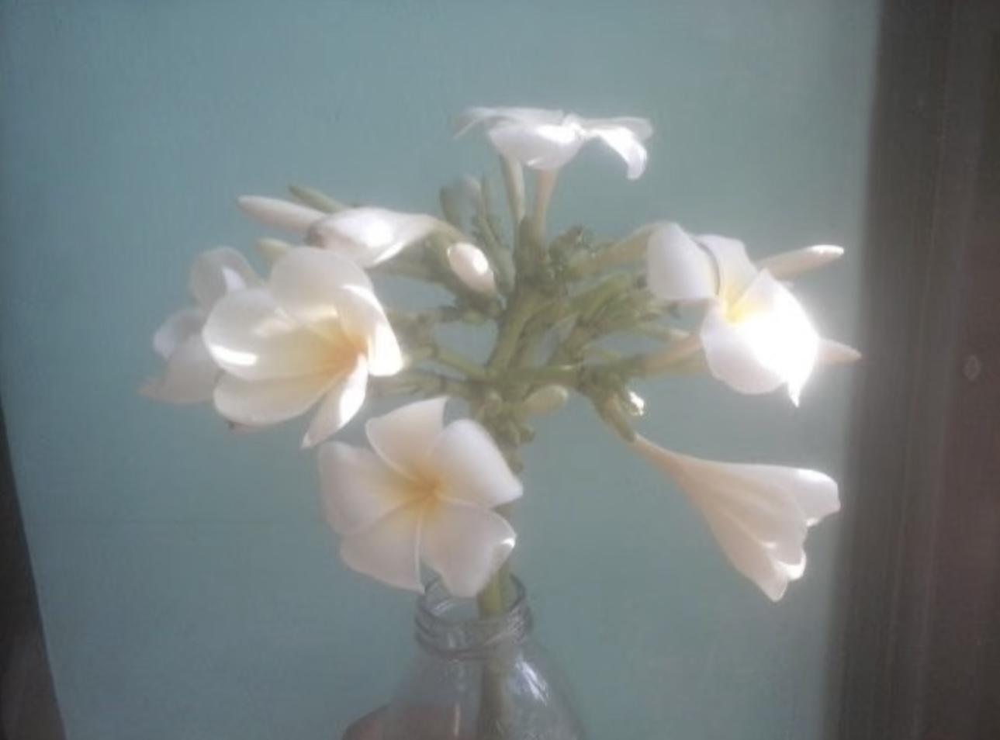

“我的故事仍在书写，每一次探索都是对‘认识你自己’的回答。”
CONTINUE TO RESEARCH ➔市场洞察 Market Insight

在遮蔽中看见真实，在模糊中寻找清晰。这是我的洞察方法论。

洞察力需要力量与美感——既要有数据的支撑，也要有审美的直觉。
回晓风 Hui Xiaofeng
#哲学思维 #市场洞察
一个在哲学与市场之间游走的探索者。
从厦门大学的哲学殿堂，到快消与奢侈品的市场前线，我始终相信：真正的洞察力源于对本质的追问——不是表面的数据，而是数据背后的人性。
洞察力如水，纯净而深邃。我用哲学的追问，穿透市场的表象。

层层递进的哲学探索，让我在复杂中看见简单，在变化中抓住本质。
在遮蔽中看见真实，在模糊中寻找清晰。这是我的洞察方法论。
洞察力需要力量与美感——既要有数据的支撑，也要有审美的直觉。

“我的故事仍在书写，每一次探索都是对‘认识你自己’的回答。”
CONTINUE TO RESEARCH ➔